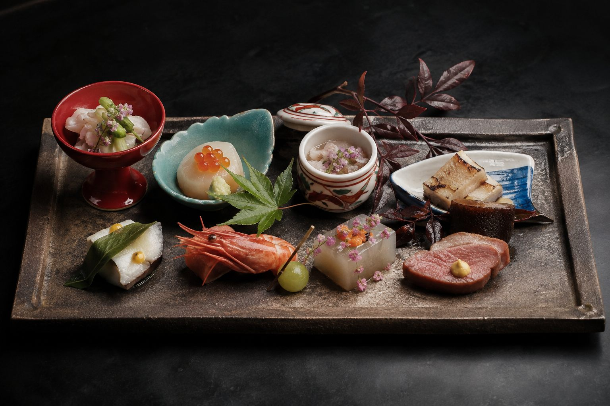
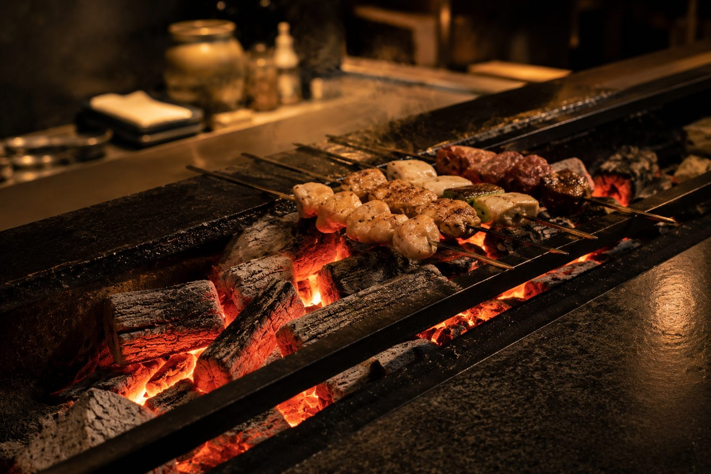

十月分のご予約を承ります
八月一日午前十時より、電話にて受付を開始します。二部（20:30）は比較的お取りやすくなっております。

仕込みが済むのは開店の一時間前。同じ夜は二度ありません。
お品書き おまかせ 八月の一例全十二品、¥28,000。酒とワインの組み合せもご用意します。
店内・空間 一軒家に、八席吉野杉の一枚板。灯りは手元だけに落としています。
決めているのは順序と火加減だけで、素材はその日に決まります。朝は築地の仲買を三軒まわり、昼に千葉と三浦から青物が届く。仕込みが済むのは開店の一時間前。だから同じ夜は二度ありません。
八席のカウンターは、板場との距離を三尺に保っています。焼きの音、椀を満たす湯気、器を置く間。料理は皿の上だけで完結しないと考えています。お客様は一斉にお席へ、同じ皿を同じ温度で。

仕入れにより毎日入れ替わります。お苦手な食材は、ご予約の際にお知らせください。
| 一 |
先付 賀茂茄子の翡翠煮吉野葛、蓼の香り
|
Sakizuke |
| 二 |
椀物 鱧と冬瓜の葛仕立て一番出汁、青柚子
|
Wanmono |
| 三 |
向付 明石の鮪、鳥貝土佐醤油、山葵は朝おろし
|
Mukouzuke |
| 四 |
焼物 鮎の一夜干し 炭火蓼酢、天然塩のみ
|
Yakimono |
| 五 |
炊合 海老芋と鴨ロース白味噌、粉山椒
|
Takiawase |
| 六 |
強肴 鮑の柔らか蒸し肝のソース、酢橘
|
Shiizakana |
| 七 |
御飯 丹波の新米、香の物土鍋炊き、椀替りの赤出汁
|
Gohan |
| 八 |
水菓子 白桃と甘露薄茶とともに
|
Mizugashi |
全十二品。税・サービス料（10%）別。
日本酒五種。料理に合わせて主人がお出しします。
四種。ブルゴーニュとジュラを中心に。
常備は十五種ほど。冷蔵庫の容量にあわせ、開けたものはその晩で使い切ります。銘柄のご指定より、皿に合わせてお任せいただくほうが良い夜になります。
二か月前の一日、午前十時より翌々月分を承ります。フォームは仮のお申し込みで、折り返しお電話にて確定いたします。当日のお取り消しは全額を頂戴します。
03 · 5555 · 0110